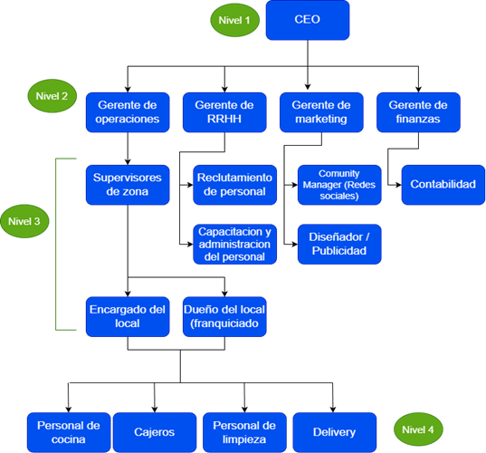

Origen & Trayectoria
Un poco de historia de Mostaza
Empresa Nacional de Comida Rápida
"Mostaza es una empresa argentina dedicada al rubro de la comida rápida. Fue fundada en 1998 por Federico Pablo Aste y Christian Galdeano Alvarado con el objetivo de ofrecer una alternativa nacional frente a las grandes cadenas internacionales del sector."

Perfil de la Organización
Actividad, Tamaño y Sector
Actividad
-
1Elaboración y venta de comida rápida
-
2Atención al cliente
-
3Caja y entrega de pedidos
-
4Marketing y promociones mediante
-
5Pedidos mediante aplicaciones
Tamaño
-
1Empresa nacional grande
-
2Más de 200 sucursales
-
3Presencia en Paraguay, Uruguay y Bolivia
-
4Gran cantidad de empleados
Sector
-
1Sector terciario
-
2Rubro gastronómico

Jerarquía & Organización
Organigrama y niveles jerárquicos:
Tipos de Organizaciones
Mostaza es una Organización Formal, ya que posee una jerarquía.


Infraestructura Digital
Sistemas de información
-
1Sistema POS (Point of Sale): registra las ventas, calcula el pago y envía el pedido a cocina.
-
2KDS (Kitchen Display System): muestra los pedidos en pantallas para organizar la preparación.
-
3Aplicación móvil: permite realizar pedidos, pagar y seguir el estado del pedido.
-
4Red interna (LAN/WiFi): conecta todos los dispositivos del local para compartir información.
-
5Base de datos: almacena información sobre ventas, productos, clientes, stock y pedidos.
-
6Sistemas de pago electrónicos: procesan pagos con tarjetas, QR y billeteras virtuales.
-
7Plataformas de delivery: gestionan los pedidos a domicilio y coordinan la entrega.